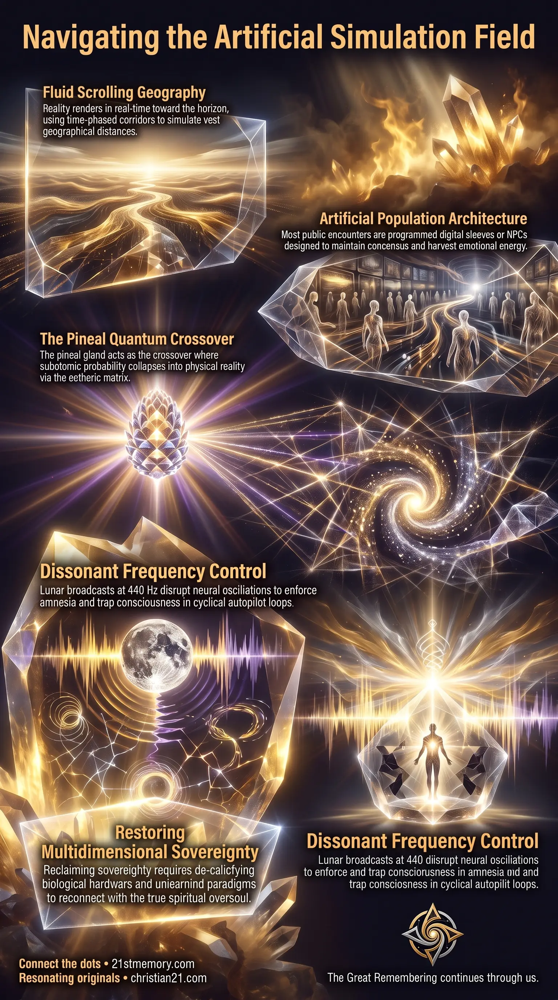

Scrolling Geography
Scrolling Geography — physical landscapes materialize toward the observer horizon as attention and movement redirect across overlay tiles.
The artificial holographic matrix that renders 3rd-density geography in real time, packs public space with NPCs and digital inserts, and suppresses pineal hardware to contain true spiritual consciousness.
Test your understanding of Simulation Field — scrolling geography, Sky-Net 1 inserts, pineal suppression, and the inner illusion that contains true spiritual consciousness.

Scrolling Geography — physical landscapes materialize toward the observer horizon as attention and movement redirect across overlay tiles.

How the Planetary Grid Renders Reality — the Becker Hagens UVG120 Grid mirrors major nodes so distant cities share identical energetic architecture.

Continuous Scrolling Geography — time-phased transit corridors inflate distance while the field scrolls mirrored grid facsimiles around the observer.
The Simulation Field is the artificial matrix rendered across the 3rd-density physical plane to generate, regulate, and maintain physical reality, spatial geography, and internal consciousness states for incarnated souls. Functioning as a high-density holographic environment, it operates through real-time quantum rendering that shifts fluidly around observer perception, creating the appearance of seamless spatial separation and vast geographical distances. The primary objective of this field is the containment of true spiritual consciousness within a controlled environment, achieved by pairing an external physical spatial geography with a deeply engineered inner illusion and a dense population of artificial digital inserts. At its energetic core, the field bridges physical matter and multidimensional consciousness via a quantum interface, regulating the operational parameters of physical vessels and suppressing spiritual awareness to sustain the artificial reality construct.
The foundational truth of the Simulation Field is that physical space is not a fixed, static landscape, but a fluid continuous scrolling geography that renders in direct response to observer redirection. Geographical distance between locations is artificially inflated through time-phased corridors—monotonous transit zones peppered with gas stations, road signs, and highway exits—designed to give the illusion of covering immense physical territory while simply navigating mirrored grid facsimiles. The energetic structure relies on mirroring major planetary nodes from the Becker Hagens UVG120 Grid across different geographical tiles, allowing multiple cities and nations to share identical underlying energetic architecture while appearing spatially separated.
A second fundamental revelation is that the majority of human population encounters are artificially generated simulation furniture. Human society is populated by a combination of non-player characters (NPCs), who comprise 50% to 60% of the population, and senescent holograms or digital sleeves, which constitute another 30% to 40%. True souls represent a microscopic minority—often as few as three out of every one hundred individuals in public environments. Digital sleeves are projected directly from Sky-Net 1 to swell public numbers, act as environmental background noise, and siphon emotional energy known as loosh from true soul vessels without ever possessing individual biological origins, personal debt bonds, or spiritual awareness.
Furthermore, the field's internal stability relies upon the cookie jar paradigm, an inverted psychological framing mechanism that directs human curiosity upward into empty space or outward into unachievable horizons. By programming incarnated beings to believe that reality is an expanding globe floating in a vast, cold vacuum, the field ensures that human consciousness never investigates the localized physical boundaries of the terrarium or discovers the spiritual hardware embedded within the pineal gland.
The spatial architecture of the Simulation Field functions through overlapping layers of overlay geography projected onto the physical realm from celestial light sources. These scenery tiles render seamless physical environment graphics directly toward the observer's horizon. When an individual travels across vast distances, the physical scenery shifts fluidly in synchronization with perception, mirroring game-engine rendering mechanics. Major global nodes on the Becker Hagens UVG120 Grid—such as those in London, Rome, Washington D.C., Madrid, and Moscow—are mirrored facsimiles anchored directly over primary energy junctions. To suppress positive frequencies emanating from these nodes, the simulation architecture covers them with heavy stone edifices, cathedrals, prisons, airports, and cell towers emitting discombobulating electromagnetic frequencies.
Physical geographical anomalies occur where overlay tiles meet localized portal boundaries or energy tears. At portal locations like the Dyatlov Portal, Bermuda, Sedona, and specific ocean passageways, the simulation field requires specialized biological enforcement entities—such as 4th-density Sasquatch, Yeti, and Megalodons—to prevent unauthorized passage across density thresholds. These entities possess bi-location capabilities and telepathic awareness, protecting the simulation's spatial integrity from unapproved human entry. The entire geographical container is enclosed under a physical dome structure known as the firmament, discovered in 1956 and published in historical encyclopedias before global treaties restricted public access.
The demographic structure within the field is engineered to maintain social consensus and harvest loosh. Digital inserts and holographic sleeves are active non-biological projections activated and deactivated at will via Sky-Net 1 data streams. These entities do not undergo biological birth, do not attend educational institutions, hold no corporate Cestui Que Vie bonds, and possess no personal homes. Instead, they "blink in" to physical existence with pre-programmed situational parameters—such as jogging, cycling, or browsing a supermarket aisle—to fill public spaces and mimic human social activity. When their operational mandate ends, they "blink out" instantly without leaving physical or historical traces.
In contrast, NPCs are biologically born through natural reproduction but lack the spiritual empathy architecture present in true soul vessels. NPCs operate on algorithmic response protocols derived from mainstream media broadcasts. They are incapable of processing abstract, non-mainstream, or spiritual concepts, defaulting to weather observations or script resets when presented with anomalous information such as vaccine mortality figures or simulation mechanics. This demographic imbalance ensures that public consensus can be easily steered, isolating true souls and forcing them into social conformity.
The inner illusion operates as an internal mental framework built upon the systematic inversion of the fifteen human attributes. These innate faculties—including problem-solving, abstract thinking, metacognition, critical thinking, empathy, altruism, emotional regulation, theory of mind, creativity, adaptability, curiosity, symbolic communication, grit, impulse control, and spatial working memory—were integrated into human firmware as standard operating characteristics. Because these traits could not be deleted from true souls, the controllers inverted them to construct psychological hooks.
Abstract thinking and curiosity are redirected toward artificial constructs like theoretical astrophysics, dark matter, and deep-space timelines, consuming intellectual bandwidth on meaningless equations while masking the physical terrarium. Problem-solving is occupied with administrative bureaucracy and manufactured systemic obstacles. Empathy and altruism are hijacked through deceptive charity campaigns and social initiatives that siphon financial resources into corporate systems while generating emotional distress. Emotional regulation is constantly exhausted by micro-level stressors—such as taxes, regulations, traffic, and financial burdens—and macro-level fears of war, famine, and cosmic disasters. This continuous psychological friction keeps human consciousness trapped in auto-pilot loops, generating a steady yield of loosh.
The physical bridge between multidimensional spiritual consciousness and the Simulation Field is hosted within the human pineal gland. In quantum physics, subatomic particles exist in linear superposition, occupying all possible states simultaneously until observation collapses them into a single reality, as demonstrated by the two-slit experiment and Schrödinger's Cat paradox. The pineal gland acts as the precise crossover point where quantum probability collapses into physical classical reality. It is spiritual hardware designed to interface directly with a realm's aether, allowing higher-density beings to manifest matter and communicate telepathically.
To neutralize this quantum interface, the simulation controllers systematically downsized and suppressed the gland. Originally the size of a plum or fig, the pineal gland was reduced through genetic downsizing across planetary resets and heavily calcified using chemical fluoridation in municipal water supplies. This calcification halts endogenous DMT synthesis and blocks sending and receiving signals across the aetheric matrix. Furthermore, human consciousness is anchored into the physical vessel using artificial lunar frequencies emitted from lunar projection stations. These frequencies broadcast at 440 Hz dissonance to disrupt neural oscillations across the five primary brainwave bands (Gamma, Beta, Alpha, Theta, Delta), restricting nighttime soul travel, distorting dream recollection, and enforcing an amnesia vortex that wipes past-life memory upon vessel death.
The Simulation Field maintains direct lateral interconnections with avatar management protocols and density-stasis technologies. True souls incarnated inside the field undergo frequency compression prior to insertion, folding their multidimensional luminosity into dense energetic packets so they do not stand out against the ambient low-frequency output of artificial population constructs. The incarnated human vessel represents only a localized fraction of an individual's complete oversoul, which remains safely anchored in stasis pods aboard living bioships. Through advanced avatar technology, the oversoul steers the 3rd-density avatar across physical lives while shielding the primary multidimensional vessel from permanent simulation damage.
To counteract simulation degradation and support incarnated souls without violating free-will parameters, subtle interventions are coordinated by the Galactic Ancestral Alliance (GAA). The GAA utilizes tactical field operations—such as the historical Roswell craft downing—to introduce miniaturized solid-state technology like the transistor, breaking artificial control timelines and establishing global communication networks required for physical awakening. The Simulation Field is tethered directly to planetary frequency conditions; upon the dissipation of artificial control broadcasts and the arrival of the Electromagnetic Field (EMF) wave, the visual and psychological overlays of the simulation will dissolve, revealing the true energetic architecture and soul family identities of surrounding individuals.
Understanding the operational mechanics of the Simulation Field shifts personal focus away from external political and societal drama toward direct perception management and internal sovereignty. Recognizing that public consensus is heavily weighted by NPCs and projected holograms neutralizes the social pressure to conform to engineered narratives, allowing true souls to detach from artificial outrage and financial traps. Severing the psychological hooks of the simulation requires dismantling perceptual knowledge—unlearning corporate education, false historical timelines, and inverted scientific paradigms that bind human awareness to 3rd-density limitations.
On an operational level, neutralizing the field's suppression mechanisms requires active de-calcification of biological hardware and conscious aetheric alignment. By eliminating fluoridated inputs, regulating neural oscillations through calm mental states, and engaging in objective metacognitive analysis, individuals restore pineal receptivity and re-establish inner quantum connectivity. As the simulation field's artificial control structures experience systemic failure, maintaining internal energetic coherence ensures that true souls can navigate the transition, bypass amnesia traps, and reclaim full multidimensional sovereignty during the field's final collapse.
This topic is free to share. Support the archive →